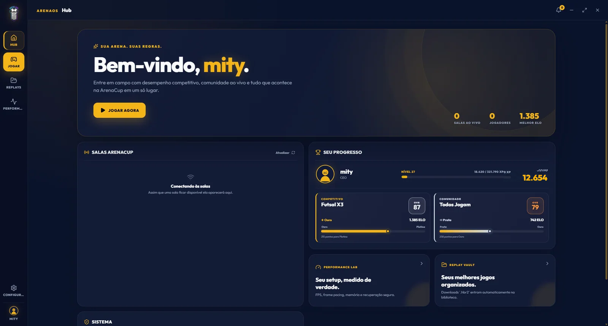

Em destaque Web + Desktop
ArenaCup
& ArenaOS
Ecossistema competitivo de HaxBall com rankings, torneios, replays e integração com Discord. O cliente ArenaOS reúne salas, biblioteca de partidas e métricas de desempenho.
